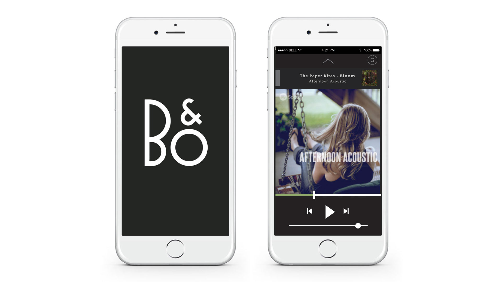

Beo Form is a mobile application that provides customers a personalized remote control over all of Bang & Olufsen’s products, facilitating product adoption and use; Thus, creating a seamless experience across different products.

Role:
UX Design
Motion Graphic
Prototype
Research
Tools:
Illustrator
Premiere Pro
After Effects
Axure
Photoshop
Team:
Robyn Goodridge
Alex Honeywell
Venus Wan
Chris Elawa
Sean Leach
Nadhirah Shukri
Identifying the problem
Bang & Olufsen (B&O) is known for specializing in high-end audio-visual products and strives to create the best experience for their customers by allowing them to control all of the devices remotely. In their current ecosystem of mobile apps, there are five different mobile applications for customers to use (figure below). New customers get confused and frustrated figuring out the right mobile application to download, which results the opposite desired experience for the brand.
We studied the band’s history, values, and touchpoints to get a deeper understanding of Bang & Olufsen as a company. Over many years, they have managed to successfully create high quality products to elevate their customer’s audio-visual experience. After analyzing the luxury market trend, we understood that simplicity across physical and digital touchpoints is highly valuable within this complex domain. If B&O digital experience achieves the same level of experience as their physical products, they could strengthen their position within the competitive market.
Finding opportunity
We mapped out the customer experience from pre-store, in-store, and post-store stages to help us identify critical touchpoints and areas for new opportunities to enhance positive experience and reduce friction points. We realized it is important for the customer to go in-store and interact with the salesperson to have a taste of the product, which helps to reaffirm their purchase. We decided to explore ways to develop the in-store stage.
Bang & Olufsen decided to expand their target market to include younger audience who are more critical of luxury brands. The customer is aware of the salesperson’s main intention to increase sales, thus making them less likely to trust the salesperson. We noticed that a way to build trust is to minimize the knowledge gap between the customer and the salesperson; however, this method would require some time.
We looked into the services the librarian provides, such as getting to know the customer in order to make recommendations, and found that a way to earn customer’s trust is by personal curation. We used this as a framework to build trust between the customer and salesperson.
Bang & Olufsen separate themselves from their competitors by emphasizing the emotional connections made with sound and image, instead of focusing on the specifications of the product. They created a global campaign called “What Moves You”, which consisted of clips and sounds of artists and visionaries with rich stories to share. We decided to utilize the content from this campaign and bring into the in-store experience by having the salesperson curate a personal playlist for each customer. Customers are able to use own mobile devices to play the curated playlist to test products in-store.
We mapped out potential walkthroughs of different users, which allowed us to identify essential elements to fulfill each customer’s personal needs and figure out the best way to organize them. The interface needed to be flexible and consistent across different use cases.
The main interaction is swiping up to go through each step, so users san easily create a mental model of the app flow. To allow users to easily access their current activities, we created a sidebar menu that slides out from the left.
Knowing from our research that most customer today view products online, we decided to create an onboarding experience on the pre-existing Bang & Olufsen’s website to convince customers to visit the store by giving them a glimpse of the experience.
Customers are able use the app to test products in store, which gives them the experience of what it’s like to own one. This experience increases their confidence in using the app and desire to purchase a product.
Customers can keep track of all their Bang & Olufsen’s products via the account page, allowing them customize room settings and check the order status of their recent purchase.
To further enhance the personalized experience, we designed an interface where customers can easily access their favourite activities with one-click, promoting product integration and expanding their collection in the future.